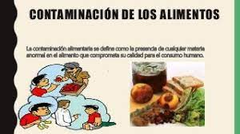
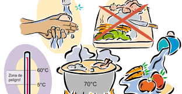
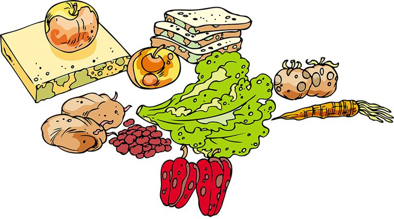

EN EL MOMENTO QUE UNA SUSTANCIA O MATERIA ESTÁ MODIFICANDO LA CALIDAD DE UN ALIMENTO Y ESTE ES PERJUDICIAL PARA LOS SERSE VIVOS, SE ESTÁ PRODUCIENDO
UNA CONTAMINACIÓN ALIMENTARIA. MUCHOS MICROORGANISMOS COMO LAS BACTERIAS, VIRUS Y HOGOS SON CAUSANTES DE LA CONTAMINACIÓN ALIMENTARIA.
TAMBIÉN LOS ALIMENTOS SE PUEDEN VER CONTAMINADOS POR EL MAL USO DE LOS AGROQUÍMICOS. EN ESTE OTRO ARTÍCULO PUEDES APRENDER SOBRE LOS TIPOS
DE CONTAMINACIÓN EN LOS ALIMENTOS.

CONTAMINANTE ALIMENTARIO ES, SEGÚN EL CODEX ALIMENTARIUS1 "CUALQUIER SUSTANCIA NO AÑADIDA INTENCIONALMENTE AL ALIMENTO QUE ESTÁ PRESENTE
EN DICHO ALIMENTO COMO RESULTADO DE LA PRODUCCIÓN, FABRICACIÓN, ELABORACIÓN, PREPARACIÓN, TRATAMIENTO, ENVASADO, EMPAQUETADO, TRANSPORTE
O ALMACENAMIENTO DE DICHO ALIMENTO O COMO RESULTADO DE CONTAMINACIÓN AMBIENTAL. ESTE TÉRMINO NO ABARCA FRAGMENTOS DE INSECTOS,
PELO DE ROEDORES Y OTRAS MATERIAS EXTRAÑAS".
CUÁLES SON LOS PRINCIPALES CONTAMINANTES DE LOS ALIMENTOS
LOS ALIMENTOS PUEDEN ESTAR CONTAMINADOS POR METALES TÓXICOS, PLAGUICIDAS Y RESIDUOS DE FÁRMACOS DE USO VETERINARIO, ASÍ COMO POR CONTAMINANTES
ORGÁNICOS, RADIONUCLEIDOS Y MICOTOXINAS.

CÓMO AFECTA LA CONTAMINACIÓN A LOS ALIMENTOS:
HABLAMOS DE METALES PESADOS U OTRAS SUSTANCIAS TÓXICAS PRESENTES EN EL AIRE Y EL AGUA QUE, EN CONTACTO CON LOS ALIMENTOS, SE VAN ACUMULANDO
EN NUESTRO ORGANISMO, PUDIENDO LLEGAR A SER RESPONSABLES DE DETERMINADAS INTOLERANCIAS ALIMENTARIAS Y ENFERMEDADES.
CUÁLES SON LOS TRES TIPOS DE CONTAMINACIÓN DE ALIMENTOS:
CONTAMINACIÓN DE LOS ALIMENTOS:
•PELIGROS FÍSICOS: OBJETOS COMO CRISTALES, HUESOS, OBJETOS PERSONALES, ETC.
•PELIGROS QUÍMICOS: COMO PRODUCTOS DE LIMPIEZA O SUSTANCIAS TÓXICAS, ETC.
•PELIGROS BIOLÓGICOS: SERES VIVOS COMO MICROORGANISMOS, INSECTOS, ROEDORES, AVES, ETC

CUÁLES SON LOS RIESGOS DE CONTAMINACIÓN EN LOS ALIMENTOS 5 EJEMPLOS:
*PELIGROS BIOLÓGICOS: BACTERIAS, PARÁSITOS, VIRUS, TOXINAS.
*PELIGROS QUÍMICOS: METALES PESADOS, PESTICIDAS O CUALQUIER OTRA SUBSTANCIA O COMPUESTO CON EFECTOS SOBRE LA SALUD.
*PELIGROS FÍSICOS: TROZOS DE CRISTAL U OTRO MATERIAL FRÁGIL, PLÁSTICO, METAL O CUALQUIER OTRO SUSTANCIA AJENA AL ALIMENTO.
CÓMO SE PUEDEN CONTAMINAR LAS FRUTAS Y VERDURAS:
LAS FRUTAS Y HORTALIZAS SE PUEDEN CONTAMINAR A TRAVÉS DE LA INFILTRACIÓN DE AGUAS RESIDUALES EN LOS CAMPOS, EL RIEGO CON AGUA CONTAMINADA,
LA PRESENCIA DE ANIMALES EN EL CAMPO O UN ABONADO INCORRECTO.